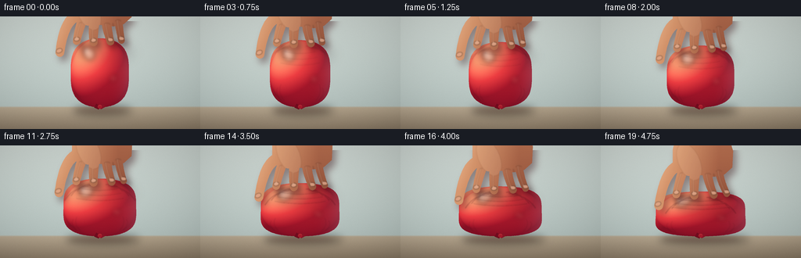
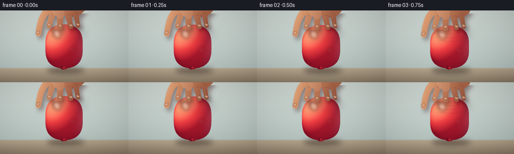
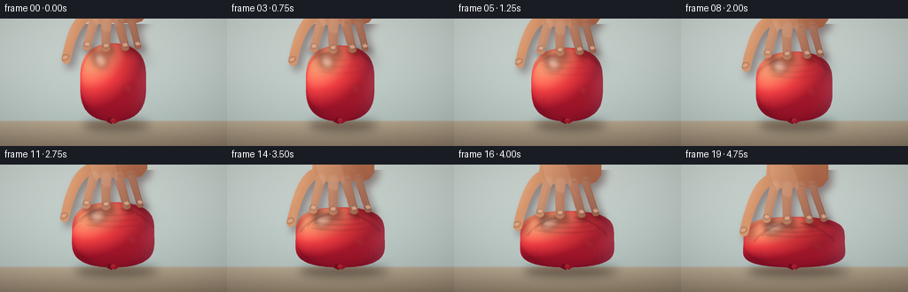
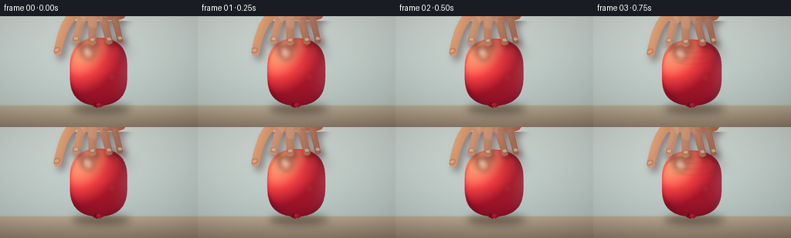
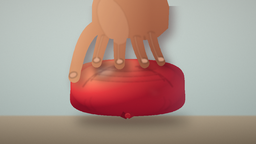
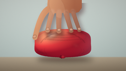
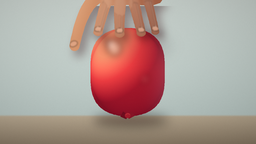
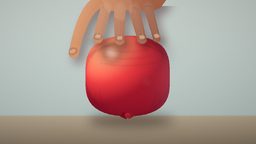
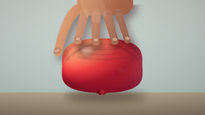

CODING AGENTS AS PIXEL WORLD MODELS
traex/DeepSeek-V4.1-Flash · phygen_013
点击播放 · 原生 RGB 像素
逐轮保存的候选
回放视频、检查图与代码变化。
每份候选均可单独播放。实际图片检查记录在下方工具轨迹中。
候选 01播放与检查图
点击播放 · 原生 RGB 像素


展开代码变化
--- 上一保存版本
+++ 本次保存版本
@@ -0,0 +1,558 @@
+from pathlib import Path
+
+import numpy as np
+from PIL import Image, ImageChops, ImageDraw, ImageFilter
+
+import artifact_io
+
+
+WIDTH = 256
+HEIGHT = 144
+FRAMES = 20
+FPS = 4.0
+S = 4
+W = WIDTH * S
+H = HEIGHT * S
+ROOT = Path(__file__).resolve().parent
+
+
+def P(x, y):
+ return (int(round(x * S)), int(round(y * S)))
+
+
+def points(items):
+ return [P(x, y) for x, y in items]
+
+
+def rgba_layer():
+ return Image.new("RGBA", (W, H), (0, 0, 0, 0))
+
+
+def smoothstep(a, b, x):
+ t = np.clip((x - a) / (b - a), 0.0, 1.0)
+ return t * t * (3.0 - 2.0 * t)
+
+
+def mix_color(a, b, t):
+ a = np.asarray(a, dtype=np.float32)
+ b = np.asarray(b, dtype=np.float32)
+ return a + (b - a) * t
+
+
+def color_gradient(stops, values):
+ out = np.zeros(values.shape + (3,), dtype=np.float32)
+ for index in range(len(stops) - 1):
+ lo, color_lo = stops[index]
+ hi, color_hi = stops[index + 1]
+ local = np.clip((values - lo) / (hi - lo), 0.0, 1.0)
+ band = mix_color(color_lo, color_hi, local[..., None])
+ out = np.where((values >= lo)[..., None] & (values <= hi)[..., None], band, out)
+ out[values < stops[0][0]] = stops[0][1]
+ out[values > stops[-1][0]] = stops[-1][1]
+ return out
+
+
+def background():
+ yy, xx = np.meshgrid(
+ np.linspace(0.0, 1.0, H, dtype=np.float32),
+ np.linspace(0.0, 1.0, W, dtype=np.float32),
+ indexing="ij",
+ )
+ horizon = 116.0 / HEIGHT
+
+ wall_t = np.clip(yy / horizon, 0.0, 1.0)
+ wall = mix_color((207, 216, 211), (184, 198, 194), wall_t[..., None])
+ table_t = np.clip((yy - horizon) / (1.0 - horizon), 0.0, 1.0)
+ table = mix_color((185, 169, 145), (143, 127, 106), table_t[..., None])
+ blend = smoothstep(horizon - 0.012, horizon + 0.008, yy)
+ arr = wall * (1.0 - blend[..., None]) + table * blend[..., None]
+
+ arr += ((0.50 - xx) * 8.0)[..., None]
+ arr += (0.06 * np.sin(xx * 17.0 + yy * 5.0) * (1.0 - blend))[..., None]
+
+ rng = np.random.default_rng(19)
+ grain = rng.normal(0.0, 1.35, (H, W, 1)).astype(np.float32)
+ arr += grain
+
+ vignette = 1.0 - 0.10 * (((xx - 0.5) / 0.72) ** 2 + ((yy - 0.46) / 0.74) ** 2)
+ arr *= np.clip(vignette[..., None], 0.88, 1.0)
+ return Image.fromarray(np.clip(arr, 0, 255).astype(np.uint8), "RGB").convert("RGBA")
+
+
+def soft_ellipse(base, box, fill, blur, offset=(0, 0)):
+ layer = rgba_layer()
+ draw = ImageDraw.Draw(layer)
+ if len(box) == 2:
+ (x0, y0), (x1, y1) = box
+ else:
+ x0, y0, x1, y1 = box
+ draw.ellipse((x0 + offset[0], y0 + offset[1], x1 + offset[0], y1 + offset[1]), fill=fill)
+ layer = layer.filter(ImageFilter.GaussianBlur(blur))
+ base.alpha_composite(layer)
+
+
+def ellipse_polygon(cx, cy, rx, ry, angle=0.0, count=72):
+ theta = np.linspace(0.0, 2.0 * np.pi, count, endpoint=False)
+ ca, sa = np.cos(np.deg2rad(angle)), np.sin(np.deg2rad(angle))
+ x = rx * np.cos(theta)
+ y = ry * np.sin(theta)
+ return points(zip(cx + ca * x - sa * y, cy + sa * x + ca * y))
+
+
+def bezier(p0, p1, p2, steps=28):
+ t = np.linspace(0.0, 1.0, steps)[:, None]
+ p = (
+ (1.0 - t) ** 2 * np.asarray(p0)
+ + 2.0 * (1.0 - t) * t * np.asarray(p1)
+ + t**2 * np.asarray(p2)
+ )
+ return [tuple(v) for v in p]
+
+
+def tapered_stroke(draw, centerline, width_start, width_end, fill):
+ pts = np.asarray(centerline, dtype=np.float32)
+ left = []
+ right = []
+ for index, (x, y) in enumerate(pts):
+ if index == 0:
+ dx, dy = pts[1] - pts[0]
+ elif index == len(pts) - 1:
+ dx, dy = pts[-1] - pts[-2]
+ else:
+ dx, dy = pts[index + 1] - pts[index - 1]
+ length = max(float(np.hypot(dx, dy)), 1e-5)
+ nx, ny = -dy / length, dx / length
+ t = index / max(len(pts) - 1, 1)
+ width = width_start * (1.0 - t) + width_end * t
+ left.append((x + nx * width * 0.5, y + ny * width * 0.5))
+ right.append((x - nx * width * 0.5, y - ny * width * 0.5))
+ draw.polygon(points(left + list(reversed(right))), fill=fill)
+ draw.polygon(ellipse_polygon(*pts[0], width_start * 0.5, width_start * 0.5), fill=fill)
+ draw.polygon(ellipse_polygon(*pts[-1], width_end * 0.5, width_end * 0.5), fill=fill)
+
+
+def balloon_geometry(p):
+ top = 27.0 + 32.0 * p
+ bottom = 116.0
+ rx = 36.5 + 20.5 * p
+ ry = (bottom - top) * 0.5
+ cy = (bottom + top) * 0.5
+ theta = np.linspace(0.0, 2.0 * np.pi, 240, endpoint=False)
+ s = np.sin(theta)
+ c = np.cos(theta)
+ x_exp = 0.91 - 0.055 * p
+ y_exp = 0.64 - 0.16 * p
+ x = 127.5 + rx * np.sign(s) * np.abs(s) ** x_exp
+ y = cy - ry * np.sign(c) * np.abs(c) ** y_exp
+ lower = np.clip((y - cy) / max(ry, 1e-3), 0.0, 1.0)
+ x = 127.5 + (x - 127.5) * (1.0 + 0.075 * p * lower**1.45)
+ return {
+ "top": top,
+ "bottom": bottom,
+ "cy": cy,
+ "rx": rx,
+ "ry": ry,
+ "polygon": points(zip(x, y)),
+ "theta": theta,
+ }
+
+
+def balloon_mask(geometry):
+ mask = Image.new("L", (W, H), 0)
+ ImageDraw.Draw(mask).polygon(geometry["polygon"], fill=255)
+ return mask
+
+
+def render_balloon(base, p, geometry, mask):
+ ys, xs = np.mgrid[0:H, 0:W]
+ x = xs.astype(np.float32) / S
+ y = ys.astype(np.float32) / S
+ u = (x - 127.5) / geometry["rx"]
+ v = (y - geometry["cy"]) / geometry["ry"]
+ z = np.sqrt(np.clip(1.0 - u * u - v * v, 0.0, 1.0))
+
+ lx, ly, lz = -0.55, -0.72, 0.42
+ norm = np.sqrt(lx * lx + ly * ly + lz * lz)
+ diffuse = np.clip((u * lx + v * ly + z * lz) / norm, 0.0, 1.0)
+ rim = np.clip((u - 0.20) / 0.80, 0.0, 1.0) ** 2.4
+ shade = np.clip(0.18 + 0.83 * diffuse**1.10 + 0.13 * z, 0.0, 1.0)
+
+ balloon = color_gradient(
+ [
+ (0.00, (87, 7, 27)),
+ (0.33, (161, 20, 42)),
+ (0.68, (224, 54, 63)),
+ (1.00, (255, 145, 111)),
+ ],
+ shade,
+ )
+ warm_bounce = np.clip(1.0 - v, 0.0, 1.0)[..., None] * np.array([15, 8, 3], dtype=np.float32)
+ cool_rim = rim[..., None] * np.array([15, 29, 31], dtype=np.float32)
+ balloon += warm_bounce + cool_rim
+
+ rgba = np.dstack([np.clip(balloon, 0, 255), np.asarray(mask)]).astype(np.uint8)
+ base.alpha_composite(Image.fromarray(rgba, "RGBA"))
+
+ highlights = rgba_layer()
+ hd = ImageDraw.Draw(highlights)
+ hd.polygon(
+ ellipse_polygon(
+ 127.5 - geometry["rx"] * 0.37,
+ geometry["top"] + (geometry["bottom"] - geometry["top"]) * 0.22,
+ geometry["rx"] * 0.19,
+ (geometry["bottom"] - geometry["top"]) * 0.095,
+ -25.0,
+ ),
+ fill=(255, 229, 208, 125),
+ )
+ hd.polygon(
+ ellipse_polygon(
+ 127.5 - geometry["rx"] * 0.48,
+ geometry["top"] + (geometry["bottom"] - geometry["top"]) * 0.18,
+ geometry["rx"] * 0.065,
+ (geometry["bottom"] - geometry["top"]) * 0.055,
+ -28.0,
+ ),
+ fill=(255, 248, 237, 205),
+ )
+ hd.polygon(
+ ellipse_polygon(
+ 127.5 + geometry["rx"] * 0.46,
+ geometry["top"] + (geometry["bottom"] - geometry["top"]) * 0.58,
+ geometry["rx"] * 0.12,
+ (geometry["bottom"] - geometry["top"]) * 0.055,
+ 20.0,
+ ),
+ fill=(255, 176, 145, 42),
+ )
+ highlights = highlights.filter(ImageFilter.GaussianBlur(3.0 * S))
+ highlights.putalpha(ImageChops.multiply(highlights.getchannel("A"), mask))
+ base.alpha_composite(highlights)
+
+
+def draw_wrinkles(base, p, geometry, mask):
+ strength = smoothstep(0.10, 0.82, p)
+ if strength <= 0.0:
+ return
+ layer = rgba_layer()
+ draw = ImageDraw.Draw(layer)
+ top = geometry["top"]
+ rx = geometry["rx"]
+ height = geometry["bottom"] - top
+ dark = (69, 4, 21, int(30 + 35 * strength))
+ light = (255, 155, 130, int(18 + 20 * strength))
+
+ for side in (-1, 1):
+ for k in range(3):
+ start = (127.5 + side * (7.5 + 3.6 * k), top + 7.5 + 1.3 * k)
+ control = (127.5 + side * (20.0 + 7.0 * k), top + 5.5 + 2.8 * k)
+ end = (127.5 + side * (29.0 + 8.0 * k), top + 16.0 + 6.0 * k)
+ pts = points(bezier(start, control, end, 24))
+ draw.line(pts, fill=dark, width=max(1, int(1.05 * S)), joint="curve")
+
+ for k in range(3):
+ yline = top + height * (0.17 + 0.075 * k)
+ half = rx * (0.50 + 0.075 * k)
+ start = (127.5 - half, yline + 0.8 * k)
+ control = (127.5, yline + 5.0 + 1.2 * k)
+ end = (127.5 + half, yline + 0.8 * k)
+ curve = bezier(start, control, end, 36)
+ pts = points(curve)
+ draw.line(pts, fill=dark, width=max(1, int(0.90 * S)), joint="curve")
+ shifted = [(x, y - 1.45) for x, y in curve]
+ draw.line(points(shifted), fill=light, width=max(1, int(0.72 * S)), joint="curve")
+
+ for side in (-1, 1):
+ for k in range(2):
+ xline = 127.5 + side * rx * (0.63 + 0.10 * k)
+ start = (xline, geometry["cy"] + height * (0.16 + 0.05 * k))
+ control = (xline + side * 4.5, geometry["cy"] + height * 0.28)
+ end = (xline - side * 4.0, geometry["cy"] + height * 0.40)
+ draw.line(points(bezier(start, control, end, 20)), fill=(73, 5, 22, 28), width=max(1, int(0.8 * S)))
+
+ layer = layer.filter(ImageFilter.GaussianBlur(0.55 * S))
+ layer.putalpha(ImageChops.multiply(layer.getchannel("A"), mask))
+ base.alpha_composite(layer)
+
+
+def draw_knot(base, geometry):
+ cx = 127.5
+ y = geometry["bottom"] - 1.5
+ layer = rgba_layer()
+ draw = ImageDraw.Draw(layer)
+ draw.polygon(
+ points(
+ [
+ (cx - 4.5, y - 3.0),
+ (cx - 7.2, y + 2.0),
+ (cx - 1.5, y + 4.4),
+ (cx + 1.0, y + 0.5),
+ ]
+ ),
+ fill=(112, 13, 31, 255),
+ )
+ draw.polygon(
+ points(
+ [
+ (cx + 4.2, y - 3.1),
+ (cx + 7.1, y + 1.2),
+ (cx + 1.3, y + 4.2),
+ (cx - 0.5, y + 0.4),
+ ]
+ ),
+ fill=(137, 20, 38, 255),
+ )
+ draw.ellipse((P(cx - 2.8, y - 1.8), P(cx + 2.8, y + 3.2)), fill=(165, 27, 42, 255))
+ draw.arc(
+ (P(cx - 2.0, y - 1.0), P(cx + 2.5, y + 3.0)),
+ 195,
+ 330,
+ fill=(232, 83, 83, 145),
+ width=max(1, int(0.65 * S)),
+ )
+ base.alpha_composite(layer)
+
+
+def draw_contact_shadows(base, p, geometry):
+ top = geometry["top"]
+ # A broad hand shadow and small fingertip shadows sell the downward force.
+ soft_ellipse(
+ base,
+ (P(127.5 - 34, top + 2), P(127.5 + 42, top + 26)),
+ (58, 2, 18, int(34 + 30 * p)),
+ 7.0 * S,
+ (2 * S, 4 * S),
+ )
+ tips = [(98 - 1.5 * p, top + 3.5), (119.5, top + 5.0), (141 + 3.5 * p, top + 4.2), (155 + 6.0 * p, top + 2.7)]
+ for x, y in tips:
+ soft_ellipse(
+ base,
+ (P(x - 8, y - 2.5), P(x + 8, y + 4.0)),
+ (73, 0, 18, int(58 + 28 * p)),
+ 3.1 * S,
+ (0.5 * S, 2.0 * S),
+ )
+
+
+def hand_geometry(p):
+ hy = 28.0 * p
+ top = 27.0 + 32.0 * p
+ palm = [
+ (99, -50 + hy),
+ (160, -50 + hy),
+ (169, -21 + hy),
+ (168, 0 + hy),
+ (158, 9 + hy),
+ (145, 12 + hy),
+ (128, 10 + hy),
+ (112, 11 + hy),
+ (100, 7 + hy),
+ (92, -3 + hy),
+ (92, -23 + hy),
+ ]
+ fingers = [
+ {
+ "name": "index",
+ "p0": (104, 7 + hy),
+ "p1": (100, 19 + hy),
+ "p2": (98 - 1.5 * p, top + 3.5),
+ "w0": 12.2,
+ "w1": 9.6,
+ },
+ {
+ "name": "middle",
+ "p0": (120, 9 + hy),
+ "p1": (119, 22 + hy),
+ "p2": (119.5, top + 5.0),
+ "w0": 13.1,
+ "w1": 10.1,
+ },
+ {
+ "name": "ring",
+ "p0": (136, 8 + hy),
+ "p1": (138, 21 + hy),
+ "p2": (141 + 3.5 * p, top + 4.2),
+ "w0": 12.2,
+ "w1": 9.5,
+ },
+ {
+ "name": "pinky",
+ "p0": (151, 4 + hy),
+ "p1": (153, 18 + hy),
+ "p2": (155 + 6.0 * p, top + 2.7),
+ "w0": 10.2,
+ "w1": 8.1,
+ },
+ ]
+ thumb = {
+ "p0": (100, -2 + hy),
+ "p1": (82, 2 + hy),
+ "p2": (76.5 - 2.5 * p, top + 18.0),
+ "w0": 14.4,
+ "w1": 11.0,
+ }
+ return palm, fingers, thumb, hy
+
+
+def hand_mask(p):
+ palm, fingers, thumb, _ = hand_geometry(p)
+ mask = Image.new("L", (W, H), 0)
+ draw = ImageDraw.Draw(mask)
+ draw.polygon(points(palm), fill=255)
+ for finger in fingers:
+ center = bezier(finger["p0"], finger["p1"], finger["p2"], 26)
+ tapered_stroke(draw, center, finger["w0"], finger["w1"], 255)
+ thumb_center = bezier(thumb["p0"], thumb["p1"], thumb["p2"], 26)
+ tapered_stroke(draw, thumb_center, thumb["w0"], thumb["w1"], 255)
+ return mask
+
+
+def render_hand(base, p):
+ palm, fingers, thumb, hy = hand_geometry(p)
+ mask = hand_mask(p)
+
+ # The hand's soft shadow is deliberately visible on the balloon's upper shoulder.
+ shadow = rgba_layer()
+ shadow.putalpha(mask.point(lambda v: int(v * 0.42)))
+ shadow = shadow.filter(ImageFilter.GaussianBlur(4.4 * S))
+ shifted = Image.new("RGBA", (W, H), (0, 0, 0, 0))
+ shifted.alpha_composite(shadow, (int(4.5 * S), int(6.0 * S)))
+ shifted = Image.fromarray(
+ np.dstack(
+ [
+ np.full((H, W), 53, dtype=np.uint8),
+ np.full((H, W), 12, dtype=np.uint8),
+ np.full((H, W), 17, dtype=np.uint8),
+ np.asarray(shifted.getchannel("A")),
+ ]
+ ),
+ "RGBA",
+ )
+ base.alpha_composite(shifted)
+
+ ys, xs = np.mgrid[0:H, 0:W]
+ x = xs.astype(np.float32) / S
+ y = ys.astype(np.float32) / S
+ light_x = np.clip((151.0 - x) / 76.0, 0.0, 1.0)
+ light_y = np.clip((37.0 + hy - y) / 86.0, 0.0, 1.0)
+ shade = np.clip(0.20 + 0.54 * light_x + 0.27 * light_y, 0.0, 1.0)
+ skin = color_gradient(
+ [
+ (0.00, (113, 59, 44)),
+ (0.36, (168, 101, 73)),
+ (0.72, (211, 148, 108)),
+ (1.00, (246, 196, 157)),
+ ],
+ shade,
+ )
+ # A restrained warm bounce keeps the fingers from looking flat.
+ skin += (np.clip(1.0 - (y - (20 + hy)) / 70.0, 0.0, 1.0) * 4.5)[..., None] * np.array([1.0, 0.55, 0.25])
+ rgba = np.dstack([np.clip(skin, 0, 255), np.asarray(mask)]).astype(np.uint8)
+ base.alpha_composite(Image.fromarray(rgba, "RGBA"))
+
+ details = rgba_layer()
+ d = ImageDraw.Draw(details)
+
+ # Finger separation creases and a soft highlight along each cylindrical finger.
+ for finger in fingers:
+ center = bezier(finger["p0"], finger["p1"], finger["p2"], 26)
+ left = [(x - 1.2, y) for x, y in center]
+ d.line(points(left), fill=(255, 220, 190, 42), width=max(1, int(1.8 * S)), joint="curve")
+ separators = [
+ bezier((112, 8 + hy), (111, 18 + hy), (108.5 - 0.8 * p, 27.0 + 32.0 * p), 18),
+ bezier((128, 10 + hy), (128, 20 + hy), (129.5, 29.0 + 32.0 * p), 18),
+ bezier((144, 8 + hy), (146, 18 + hy), (148 + 2.0 * p, 27.0 + 32.0 * p), 18),
+ ]
+ for separator in separators:
+ d.line(points(separator), fill=(93, 43, 34, 70), width=max(1, int(1.0 * S)), joint="curve")
+
+ # Knuckle creases.
+ for xknuckle, yknuckle in [(105, 8 + hy), (121, 10 + hy), (137, 9 + hy), (151, 5 + hy)]:
+ d.arc(
+ (P(xknuckle - 4.0, yknuckle - 1.5), P(xknuckle + 4.0, yknuckle + 3.0)),
+ 195,
+ 345,
+ fill=(103, 48, 37, 66),
+ width=max(1, int(0.8 * S)),
+ )
+
+ # Small nails at the fingertips, mostly foreshortened by the pressing angle.
+ for finger in fingers:
+ x, y = finger["p2"]
+ angle = -8 if x < 128 else 8
+ d.polygon(
+ ellipse_polygon(x, y - 2.5, 3.6, 2.4, angle),
+ fill=(231, 174, 144, 190),
+ )
+ d.arc(
+ (P(x - 2.8, y - 4.0), P(x + 2.8, y - 0.8)),
+ 205,
+ 335,
+ fill=(255, 232, 211, 125),
+ width=max(1, int(0.5 * S)),
+ )
+ tx, ty = thumb["p2"]
+ d.polygon(ellipse_polygon(tx - 1.0, ty - 2.2, 4.0, 2.7, -22), fill=(229, 170, 140, 175))
+
+ # Broad back-of-hand highlight.
+ d.polygon(ellipse_polygon(113, -7 + hy, 13.5, 25, -24), fill=(255, 220, 186, 32))
+ details = details.filter(ImageFilter.GaussianBlur(0.70 * S))
+ details.putalpha(ImageChops.multiply(details.getchannel("A"), mask))
+ base.alpha_composite(details)
+
+
+def add_finishing(base, p, frame_index):
+ arr = np.asarray(base.convert("RGB"), dtype=np.float32)
+ yy = np.linspace(0.0, 1.0, H, dtype=np.float32)[:, None]
+ xx = np.linspace(0.0, 1.0, W, dtype=np.float32)[None, :]
+ vignette = 1.0 - 0.075 * (((xx - 0.5) / 0.72) ** 2 + ((yy - 0.48) / 0.74) ** 2)
+ arr *= np.clip(vignette[..., None], 0.90, 1.0)
+
+ rng = np.random.default_rng(100 + frame_index)
+ grain = rng.normal(0.0, 0.90, (H, W, 1)).astype(np.float32)
+ arr += grain
+ return Image.fromarray(np.clip(arr, 0, 255).astype(np.uint8), "RGB")
+
+
+def render_frame(frame_index):
+ t = frame_index / (FRAMES - 1)
+ p = 0.03 + 0.97 * t**1.40
+ geometry = balloon_geometry(p)
+ mask = balloon_mask(geometry)
+ scene = background()
+
+ # Table contact shadow, plus the growing reflection beneath the widening balloon.
+ soft_ellipse(
+ scene,
+ (P(127.5 - geometry["rx"] * 0.98, 111.0), P(127.5 + geometry["rx"] * 1.06, 124.5)),
+ (38, 25, 19, 105),
+ 5.2 * S,
+ (2.2 * S, 2.5 * S),
+ )
+ soft_ellipse(
+ scene,
+ (P(127.5 - geometry["rx"] * 0.86, 116.5), P(127.5 + geometry["rx"] * 0.86, 121.5)),
+ (104, 20, 28, int(28 + 24 * p)),
+ 3.0 * S,
+ (0.0, 1.5 * S),
+ )
+
+ render_balloon(scene, p, geometry, mask)
+ draw_wrinkles(scene, p, geometry, mask)
+ draw_knot(scene, geometry)
+ draw_contact_shadows(scene, p, geometry)
+ render_hand(scene, p)
+ return add_finishing(scene, p, frame_index)
+
+
+def main():
+ frames = []
+ for frame_index in range(FRAMES):
+ image = render_frame(frame_index)
+ image = image.resize((WIDTH, HEIGHT), Image.Resampling.LANCZOS)
+ frames.append(np.asarray(image, dtype=np.uint8))
+ artifact_io.save(np.asarray(frames, dtype=np.uint8), ROOT)
+
+
+if __name__ == "__main__":
+ main()
候选 02播放与检查图
点击播放 · 原生 RGB 像素


展开代码变化
--- 上一保存版本
+++ 本次保存版本
@@ -335,61 +335,62 @@
def hand_geometry(p):
- hy = 28.0 * p
- top = 27.0 + 32.0 * p
+ hy = 22.0 * p
+ top = 26.0 + 31.0 * p
palm = [
- (99, -50 + hy),
- (160, -50 + hy),
- (169, -21 + hy),
- (168, 0 + hy),
- (158, 9 + hy),
- (145, 12 + hy),
- (128, 10 + hy),
- (112, 11 + hy),
- (100, 7 + hy),
- (92, -3 + hy),
- (92, -23 + hy),
+ (103, -50 + hy),
+ (158, -50 + hy),
+ (166, -24 + hy),
+ (166, -6 + hy),
+ (160, 2 + hy),
+ (151, 5 + hy),
+ (137, 4 + hy),
+ (123, 4 + hy),
+ (110, 5 + hy),
+ (101, 2 + hy),
+ (96, -7 + hy),
+ (97, -25 + hy),
]
fingers = [
{
"name": "index",
- "p0": (104, 7 + hy),
- "p1": (100, 19 + hy),
- "p2": (98 - 1.5 * p, top + 3.5),
- "w0": 12.2,
- "w1": 9.6,
+ "p0": (106, 2 + hy),
+ "p1": (102, 14 + hy),
+ "p2": (98 - 1.5 * p, top + 4.5),
+ "w0": 10.8,
+ "w1": 8.7,
},
{
"name": "middle",
- "p0": (120, 9 + hy),
- "p1": (119, 22 + hy),
- "p2": (119.5, top + 5.0),
- "w0": 13.1,
- "w1": 10.1,
+ "p0": (120, 3 + hy),
+ "p1": (119, 16 + hy),
+ "p2": (119.5, top + 6.0),
+ "w0": 11.7,
+ "w1": 9.2,
},
{
"name": "ring",
- "p0": (136, 8 + hy),
- "p1": (138, 21 + hy),
- "p2": (141 + 3.5 * p, top + 4.2),
- "w0": 12.2,
- "w1": 9.5,
+ "p0": (134, 3 + hy),
+ "p1": (137, 15 + hy),
+ "p2": (141 + 3.5 * p, top + 5.2),
+ "w0": 10.8,
+ "w1": 8.6,
},
{
"name": "pinky",
- "p0": (151, 4 + hy),
- "p1": (153, 18 + hy),
- "p2": (155 + 6.0 * p, top + 2.7),
- "w0": 10.2,
- "w1": 8.1,
+ "p0": (148, 1 + hy),
+ "p1": (151, 12 + hy),
+ "p2": (155 + 6.0 * p, top + 4.0),
+ "w0": 8.8,
+ "w1": 7.1,
},
]
thumb = {
- "p0": (100, -2 + hy),
- "p1": (82, 2 + hy),
- "p2": (76.5 - 2.5 * p, top + 18.0),
- "w0": 14.4,
- "w1": 11.0,
+ "p0": (103, -5 + hy),
+ "p1": (84, -3 + hy),
+ "p2": (74.5 - 3.5 * p, top + 19.0),
+ "w0": 13.2,
+ "w1": 9.8,
}
return palm, fingers, thumb, hy
@@ -402,9 +403,41 @@
for finger in fingers:
center = bezier(finger["p0"], finger["p1"], finger["p2"], 26)
tapered_stroke(draw, center, finger["w0"], finger["w1"], 255)
+ x, y = finger["p2"]
+ # The pressed fingertip pads flatten slightly against the rubber.
+ draw.polygon(ellipse_polygon(x, y + 0.8, finger["w1"] * 0.53, finger["w1"] * 0.40), fill=255)
thumb_center = bezier(thumb["p0"], thumb["p1"], thumb["p2"], 26)
tapered_stroke(draw, thumb_center, thumb["w0"], thumb["w1"], 255)
return mask
+
+
+def draw_finger_volumes(base, p):
+ _, fingers, _, hy = hand_geometry(p)
+ mask = hand_mask(p)
+ for index, finger in enumerate(fingers):
+ center = np.asarray(bezier(finger["p0"], finger["p1"], finger["p2"], 26), dtype=np.float32)
+ cap_x, cap_y = finger["p2"]
+ layer = rgba_layer()
+ draw = ImageDraw.Draw(layer)
+ tapered_stroke(draw, center, finger["w0"], finger["w1"], (0, 0, 0, 255))
+ draw.polygon(
+ ellipse_polygon(cap_x, cap_y + 0.8, finger["w1"] * 0.53, finger["w1"] * 0.40),
+ fill=(0, 0, 0, 255),
+ )
+ arr = np.asarray(layer, dtype=np.float32)
+ a = arr[..., 3] / 255.0
+ if index == 0:
+ tint = np.array([5, -5, -3], dtype=np.float32)
+ elif index == 3:
+ tint = np.array([-9, -2, 1], dtype=np.float32)
+ else:
+ tint = np.array([0, 0, 0], dtype=np.float32)
+ arr[..., :3] = np.clip(255 + tint, 0, 255)
+ arr[..., 3] = np.clip(255 * a * 0.12, 0, 255)
+ layer = Image.fromarray(arr.astype(np.uint8), "RGBA")
+ layer = layer.filter(ImageFilter.GaussianBlur(1.5 * S))
+ layer.putalpha(ImageChops.multiply(layer.getchannel("A"), mask))
+ base.alpha_composite(layer)
def render_hand(base, p):
@@ -449,25 +482,38 @@
skin += (np.clip(1.0 - (y - (20 + hy)) / 70.0, 0.0, 1.0) * 4.5)[..., None] * np.array([1.0, 0.55, 0.25])
rgba = np.dstack([np.clip(skin, 0, 255), np.asarray(mask)]).astype(np.uint8)
base.alpha_composite(Image.fromarray(rgba, "RGBA"))
+ draw_finger_volumes(base, p)
details = rgba_layer()
d = ImageDraw.Draw(details)
# Finger separation creases and a soft highlight along each cylindrical finger.
for finger in fingers:
- center = bezier(finger["p0"], finger["p1"], finger["p2"], 26)
- left = [(x - 1.2, y) for x, y in center]
- d.line(points(left), fill=(255, 220, 190, 42), width=max(1, int(1.8 * S)), joint="curve")
+ center = np.asarray(bezier(finger["p0"], finger["p1"], finger["p2"], 26), dtype=np.float32)
+ for lateral, alpha, width in [(-0.24, 72, 1.3), (0.21, 28, 1.1)]:
+ shifted = []
+ for i, (x, y) in enumerate(center):
+ if i == 0:
+ dx, dy = center[1] - center[0]
+ elif i == len(center) - 1:
+ dx, dy = center[-1] - center[-2]
+ else:
+ dx, dy = center[i + 1] - center[i - 1]
+ length = max(float(np.hypot(dx, dy)), 1e-5)
+ nx, ny = -dy / length, dx / length
+ local_width = finger["w0"] * (1 - i / (len(center) - 1)) + finger["w1"] * i / (len(center) - 1)
+ shifted.append((x + nx * local_width * lateral, y + ny * local_width * lateral))
+ d.line(points(shifted), fill=(255, 226, 202, alpha), width=max(1, int(width * S)), joint="curve")
separators = [
bezier((112, 8 + hy), (111, 18 + hy), (108.5 - 0.8 * p, 27.0 + 32.0 * p), 18),
bezier((128, 10 + hy), (128, 20 + hy), (129.5, 29.0 + 32.0 * p), 18),
bezier((144, 8 + hy), (146, 18 + hy), (148 + 2.0 * p, 27.0 + 32.0 * p), 18),
]
for separator in separators:
- d.line(points(separator), fill=(93, 43, 34, 70), width=max(1, int(1.0 * S)), joint="curve")
+ d.line(points(separator), fill=(84, 35, 28, 105), width=max(1, int(1.25 * S)), joint="curve")
# Knuckle creases.
- for xknuckle, yknuckle in [(105, 8 + hy), (121, 10 + hy), (137, 9 + hy), (151, 5 + hy)]:
+ for xknuckle, yknuckle in [(106, 2 + hy), (120, 3 + hy), (134, 3 + hy), (148, 1 + hy)]:
d.arc(
(P(xknuckle - 4.0, yknuckle - 1.5), P(xknuckle + 4.0, yknuckle + 3.0)),
195,
@@ -495,7 +541,7 @@
d.polygon(ellipse_polygon(tx - 1.0, ty - 2.2, 4.0, 2.7, -22), fill=(229, 170, 140, 175))
# Broad back-of-hand highlight.
- d.polygon(ellipse_polygon(113, -7 + hy, 13.5, 25, -24), fill=(255, 220, 186, 32))
+ d.polygon(ellipse_polygon(116, -8 + hy, 14.5, 24, -24), fill=(255, 220, 186, 28))
details = details.filter(ImageFilter.GaussianBlur(0.70 * S))
details.putalpha(ImageChops.multiply(details.getchannel("A"), mask))
base.alpha_composite(details)
可观测工具轨迹
实际执行的命令与返回图片。
命令 1exit 0
/bin/bash -c "pwd && rg --files -g 'prompt.txt' -g 'GENERATION_RULES.md' -g 'task_spec.json' -g '"'!**/.git/**'"'"
命令 2exit 0
/bin/bash -c 'ls -la'
命令 3exit 0
/bin/bash -c 'cat GENERATION_RULES.md'
命令 4exit 0
/bin/bash -c 'cat task_spec.json'
命令 5exit 0
/bin/bash -c 'cat prompt.txt'
命令 6exit 0
/bin/bash -c "sed -n '1,240p' artifact_io.py"
命令 7exit 0
/bin/bash -c "python - <<'PY'
from PIL import Image
print('PIL ok', Image.__version__)
import numpy as np
print('numpy ok', np.__version__)
PY"命令 8exit 1
/bin/bash -c 'python generate.py'
命令 9exit 1
/bin/bash -c 'python generate.py'
命令 10exit 1
/bin/bash -c 'python generate.py'
命令 11exit 1
/bin/bash -c 'python generate.py'
命令 12exit 1
/bin/bash -c 'python generate.py'
命令 13exit 0
/bin/bash -c 'python generate.py'
命令 14exit 0
/bin/bash -c 'ls -lh frames/*.png | tail -3'
命令 15exit 0
/bin/bash -c "sed -n '250,540p' generate.py"
命令 16exit 0
/bin/bash -c 'mkdir -p candidate_01 && cp inspection.png transition_check.png candidate_01/ && cp -r frames candidate_01/frames'
命令 17exit 0
/bin/bash -c 'command -v magick || command -v convert || true'
命令 18exit 0
/bin/bash -c "python - <<'PY'
from generate import *
for idx in (0, 7, 14, 19):
render_frame(idx).resize((WIDTH, HEIGHT), Image.Resampling.LANCZOS).save(f'.tmp/preview_{idx:02d}.png')
PY"命令 19exit 0
/bin/bash -c 'python generate.py'
命令 20exit 0
/bin/bash -c "python - <<'PY'
from pathlib import Path
import json, numpy as np
from PIL import Image
p=Path('.')
spec=json.loads((p/'task_spec.json').read_text())
frames=sorted((p/'frames').glob('*.png'))
a=np.asarray(Image.open(frames[0]))
z=np.load(p/'pixels.npz')['pixels']
html=(p/'index.html').read_text()
print('frames', len(frames), 'shape', a.shape, 'dtype', a.dtype)
print('pixels.npz', z.shape, z.dtype, 'expected', (spec['height'],spec['width'],spec['frames']))
print('fps', spec['fps'], 'duration', spec['frames']/spec['fps'])
print('player', 'index.html', len(html), 'has caption', 'balloon filled with air' in html)
print('artifacts', all((p/x).exists() for x in ['generate.py','pixels.npz','index.html','inspection.png','transition_check.png']))
print('unique bytes first/last', len(set(frames[0].read_bytes())), len(set(frames[-1].read_bytes())))
PY"命令 21exit 0
/bin/bash -c 'python -m py_compile generate.py'
命令 22exit 0
/bin/bash -c "du -sh frames pixels.npz index.html inspection.png && ls -la | sed -n '1,30p'"
视觉工具实际返回图片 1

视觉工具实际返回图片 2

视觉工具实际返回图片 3

视觉工具实际返回图片 4

视觉工具实际返回图片 5

视觉工具实际返回图片 6

视觉工具实际返回图片 7

保存候选 2 份；完成命令 22 次；可验证图片返回 7 张。原始 API 响应与完整日志保留在本地。